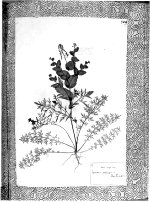

Leonhard Rauwolf, Viertes Kreutterbuech -- darein vil schoene und frembde Kreutter durch Leonhart Rauwolffen [...] einegelegt unnd aufgemacht worden. [...] Herbarium vivum van 200 gedroogde planten, ingedeeld naar vindplaatsen. Oorspronkelijk 200 ff., 490 x 360 mm, bijeengebracht in een band te Augsburg, circa 1576. -- (VGG F 1 (bruikleen Rijksherbarium))
Arts, botanist en ontdekkingsreiziger, met die drie kwalificaties is de Augsburger Leonhard Rauwolf (circa 1540-1596) in het kort te typeren. Met enkele andere tijdgenoten nam hij niet langer genoegen met een tekening, maar verzamelde hij op zijn reizen naar het voorbeeld van de Italiaan Luca Ghini (1500-1556) voor verdere studie specimina van planten, die gedroogd werden bewaard. Als zodanig is hij een representant van de Zuid-Europese renaissance van de botanie.
Zijn herbarium omvat vier delen, alle te Leiden. Het hier getoonde vierde en laatste deel is wel het kostbaarste. Het bevat de planten bijeengebracht op een reis naar het Nabije Oosten van 1573 tot 1575. Rauwolf was de eerste botanist van de nieuwe tijd die zo ver in Azië doordrong en zijn herbarium is het vroegste voorbeeld van een verzameling planten van buiten Europa.
De reis werd mogelijk gemaakt door zijn zwager, de rijke Augsburgse koopman Melchior Manlich, die handel dreef op de Levant en die op die manier nieuwe producten hoopte te ontdekken. De gedroogde planten die Rauwolf meebracht, konden dienen als monsters voor bestellingen en vervolgens weer als controle op de geleverde waar. Maar Rauwolf verzamelde ook voor de wetenschap. Zelf heeft hij erover gepubliceerd in zijn vermaarde reisjournaal, dat in het Duits, Engels en Nederlands werd uitgegeven. Tegelijkertijd stelde hij anderen als Fuchs en Clusius (zie nummer 98 en 101) zijn vondsten gul ter beschikking. De afbeelding toont folio 109 met de Lepidium perfoliatum L., een kruisbloemige plant, verwant aan de sterrekers.
Literatuur
- Ludovic Legré, La botanique en Provence au XVIe siècle: Léonard Rauwolff, Jacques Renaudet. Marseille 1900, p. 9-11.
- Karl H. Dannenfeldt, Leonard Rauwolf, sixteenth-century physician, botanist, and traveller. Cambridge (Mass.) 1968, p. 228-230.
| vorige pagina | top pagina |